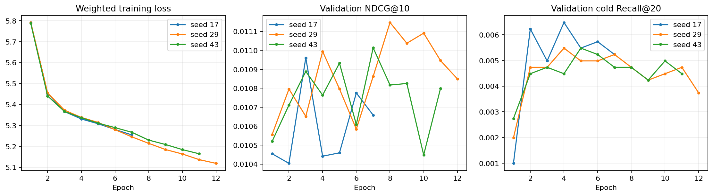
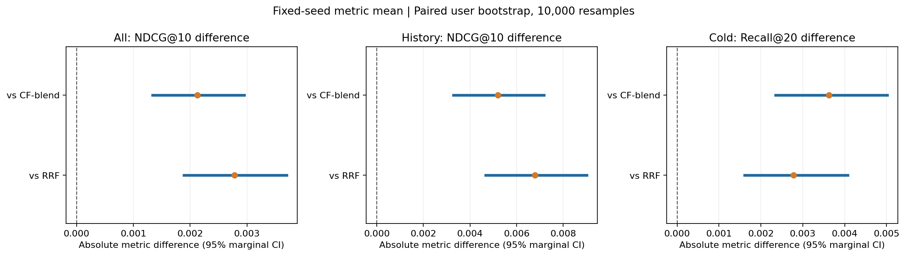

本轮是原 R05 的固定配置复验及事后统计补充，旧测试已经查看，不是新的封闭测试。
训练样例、候选池、编码器、模型结构、损失权重和优化设置均固定；只补种子并重放 seed 17。
逐种子最佳轮次仅由全体验证 NDCG@10 选定。没有按测试结果重新选择方法或种子。
| 方法 | 整体 NDCG@10 | 有历史 NDCG@10 | 冷 Recall@20 | 冷命中 |
|---|---|---|---|---|
| RRF | 0.006537 | 0.003702 | 0.000847 | 6 / 7088 |
| CF-blend | 0.007188 | 0.005291 | 0.000000 | 0 / 7088 |
| ColdListMLP-s17 | 0.009119 | 0.010002 | 0.003668 | 26 / 7088 |
| ColdListMLP-s29 | 0.009761 | 0.011567 | 0.003386 | 24 / 7088 |
| ColdListMLP-s43 | 0.009066 | 0.009873 | 0.003809 | 27 / 7088 |
冷加权三种子整体 NDCG@10=0.009315 ± 0.000387；冷目标 Recall@20=0.003621 ± 0.000216。± 是种子间样本标准差，不是置信区间。
区间未进行多重比较校正；不能据 48 项中的个别区间声称总体显著。用户聚类未处理跨用户的共同商品和时间冲击，也不包含训练随机性。静态元数据、低候选覆盖和离线业务边界保持不变。

